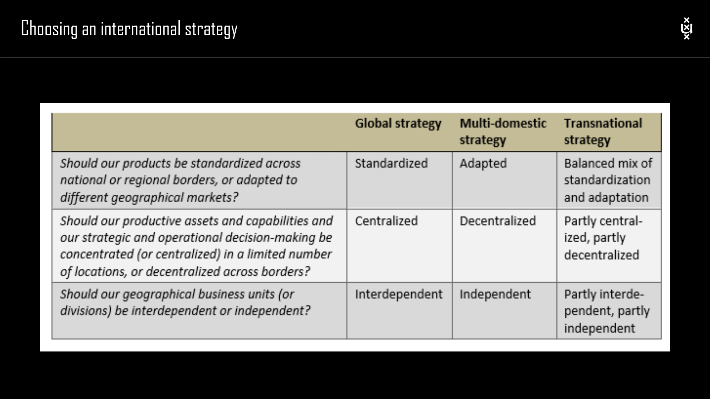

The framework
| Strategy | Operating emphasis | Organizational connection |
|---|---|---|
| Multidomestic | Adapt products and decisions to local markets. | Geographical area structures give regions substantial responsibility. |
| Global | Standardize and integrate for efficiency. | Product divisions coordinate businesses across geographical markets. |
| Transnational | Combine local adaptation with global integration at a global level. | Shared product and geographical responsibilities require intensive coordination. |
| Regional combined strategy | Pursue integration and responsiveness within a regional scope. | The combined logic is applied at a regional rather than worldwide level. |
Key distinctions
Three design questions
The lecture asks whether products should be standardized or adapted, whether assets and strategic or operational decisions should be centralized or decentralized, and whether geographical units should be independent or interdependent. These questions should be answered together.
Why the matrix appears
When both product integration and regional response are important, a matrix can represent the two sets of responsibilities. Its benefit is attention to both dimensions; its challenge is the coordination required where authority and priorities overlap.
How to use it
- Identify which elements of the offer benefit from consistency and scale.
- Identify which elements require local adaptation.
- Allocate decisions and responsibilities to match those requirements.
Keep in mind
The labels are not a progression toward one universally superior strategy. A combined strategy carries coordination costs that need to be justified.
What differentiates global and multidomestic strategies?
Reveal the explanation
Global strategy emphasizes integration and standardization; multidomestic strategy emphasizes local adaptation and decentralized response.
Read the classroom original
Complete pages from the supplied lecture slides. Select a page to read, enlarge or browse its extracted text. Page numbers refer to the PDF’s physical page order.
